Akış Editörü ile Değer Akışı Haritalama
Adım adım uygulamalı VSM rehberi
Bu rehber, değer akışı haritasının (VSM) nasıl hazırlandığını ve her adımın Akış Editörü'nde nasıl yapıldığını birlikte anlatır. Baştan sona uygulamadaki “Örnek süreç” haritası kullanılır; aynı sayıları kendi ekranınızda görebilirsiniz.
Örnekteki şirket, ürünler, süreler ve maliyetler tamamen uydurmadır; gerçek bir şirkete ait değildir. Rehber Ekim 2026'daki uygulama sürümüne göre yazıldı (kayıt formatı sürüm 11).
1. Başlarken: ekran ve kayıt
Akış Editörü tarayıcıda çalışır; kurulum gerekmez. Genel amaçlı bir akış diyagramı editörüdür; VSM sembolleri ve hesapları bunun üzerine eklenmiştir. Yani VSM dışındaki süreçleri de çizebilirsiniz.
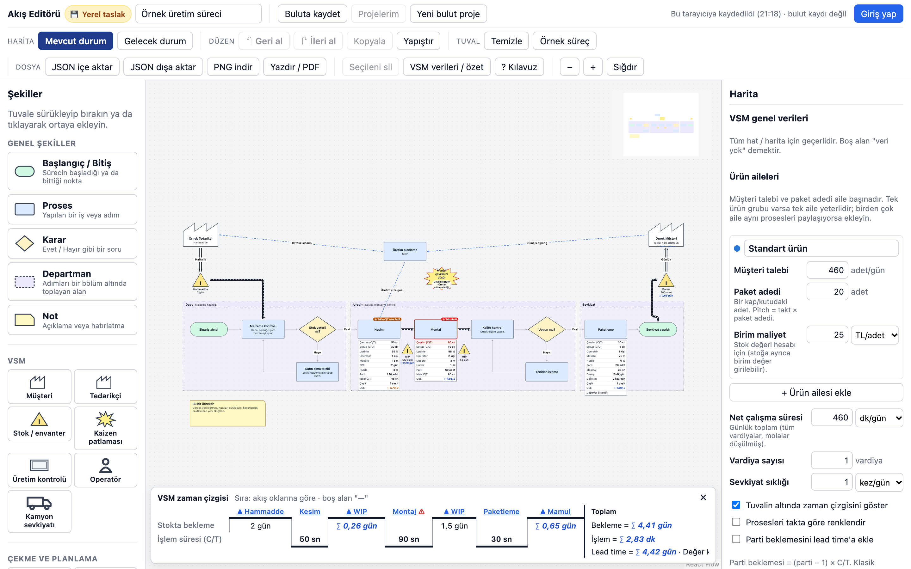
| Bölge | Ne işe yarar? |
|---|---|
| Üst çubuk | Harita adı, kayıt durumu, Mevcut / Gelecek durum sekmeleri, geri al / ileri al, kopyala / yapıştır, örnek süreç, JSON / PNG / yazdırma, aile seçici. |
| Sol palet | Şekiller (genel, VSM, çekme ve planlama) ve yeni çizilecek okun türü. |
| Tuval | Haritanın kendisi. Sürükleyerek taşıyın; tekerlekle yakınlaştırın. |
| Sağ panel | Seçili şeklin ya da okun özellikleri. Hiçbir şey seçili değilken harita verileri ve VSM özeti. |
| Alt şerit | VSM zaman çizgisi (bekleme ve işlem süresi merdiveni). |
Temel işlemler
- Şekil eklemek: Paletten tuvale sürükleyin ya da şekle tıklayın (tuvalin ortasına eklenir).
- Bağlamak: Fareyi şeklin üzerine getirin; kenarlarda beliren noktadan başka bir şeklin noktasına sürükleyin. Okun türünü önce paletten seçin; sonradan okun panelinden değiştirebilirsiniz.
- Düzenlemek: Şekle ya da oka tıklayın; sağ panelden başlık, açıklama, renk ve VSM verilerini girin.
- Silmek: Seçip Delete ya da “Seçileni sil”.
- Geri almak: “↶ Geri al” düğmesi ya da ⌘/Ctrl + Z.
Kayıt nerede duruyor? Giriş yapmadan çalışırken çiziminiz yalnızca bu tarayıcıya otomatik kaydedilir (yerel taslak). Bu bir bulut kaydı değildir: başka bir bilgisayarda görünmez, tarayıcı verileri silinirse kaybolur. Önemli haritaları düzenli olarak JSON dışa aktar ile dosyaya alın ya da Buluta kaydet kullanın (bkz. bölüm 8).
Boş ile sıfır farklıdır. Bir alanı boş bırakmak “veri yok” demektir ve hesaba katılmaz. 0 yazmak gerçek bir değerdir (ör. %0 hurda) ve hesaba katılır.
Mavi italik değerler (∑ 60 sn gibi) uygulamanın hesapladığı değerlerdir; elle girilemez.
2. Hazırlık: kapsam ve veri toplama
2.1 Ürün ailesini seçin
Değer akışı haritası tek bir ürün ailesi için çizilir: aynı ya da benzer proses adımlarından geçen ürünler. Pek çok ürününüz varsa önce basit bir tablo yapın: satırlarda ürünler, sütunlarda prosesler, geçtiği proseslere işaret. Aynı sütunlardan geçen ürünler bir ailedir. Haritaya en çok talebi olan ya da en çok sorun yaşanan aileyle başlayın.
Ürünleriniz aynı prosesleri paylaşıyor ama farklı sürelerle işleniyorsa uygulamada birden fazla aile tanımlayabilirsiniz (bkz. bölüm 7).
2.2 Kapsamı belirleyin
İlk harita için kapıdan kapıya kapsam önerilir: tedarikçiden hammaddenin gelişinden müşteriye sevkiyata kadar, tek tesis içinde. Departman sınırlarını değil, ürünün yolunu izleyin.
2.3 Sahaya gidin ve veriyi kendiniz toplayın
- Haritayı masada değil, sahada (gemba) ürünün yolunu yürüyerek hazırlayın.
- Sevkiyattan geriye doğru yürümek kolaylık sağlar: müşteriye en yakın adım akışın hızını belirler.
- Süreleri kronometreyle kendiniz ölçün; birkaç kez ölçüp ortalamayı ve en kötü değeri not edin. Eski raporlar ve sistem kayıtları çoğu zaman gerçeği göstermez.
- Stokları aynı gün sayın (adet); hepsini aynı anda görmek bekleme sürelerini doğru gösterir.
- Bilgi akışını unutmayın: sipariş nasıl geliyor, plan kime, hangi sıklıkla veriliyor?
Toplanacak verilerin listesi ve boş bir form Ek C'dedir.
3. Mevcut durum haritasını çizmek
Mevcut durum haritası bugünü olduğu gibi gösterir. Sıra önerisi: müşteri ve talep → prosesler → stoklar → malzeme akışı → bilgi akışı → zaman çizgisi.
3.1 Harita verileri ve takt süresi
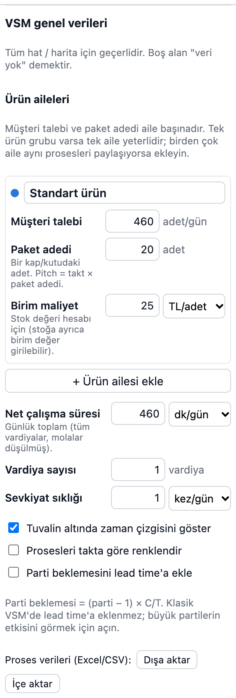
Tuvalde boş bir yere tıklayın (ya da “VSM verileri / özet”). Sağ panelde VSM genel verileri açılır.
- Net çalışma süresi (dk/gün): günlük toplam, tüm vardiyalar, molalar ve planlı duruşlar düşülmüş.
- Vardiya sayısı ve sevkiyat sıklığı: bilgi amaçlıdır.
- Ürün aileleri: her aile için müşteri talebi (adet/gün), paket adedi (bir kutudaki adet; pitch için) ve birim maliyet (stok değeri için).
Uygulama takt süresini hesaplar: müşterinin bir ürünü hangi sıklıkla istediği.
Takt = net çalışma süresi ÷ günlük talep — örnekte 460 dk × 60 = 27.600 sn ÷ 460 adet = 60 sn.
3.2 Müşteri ve tedarikçi
Paletin VSM bölümünden Müşteri (sağ üst) ve Tedarikçi (sol üst) fabrika simgelerini ekleyin.
Müşteri simgesinde talep ve takt kendiliğinden görünür.
3.3 Prosesler ve veri kutuları
Proses kutusu, malzemenin kesintisiz aktığı bir alanı temsil eder. Malzeme durup bekliyorsa (stok oluşuyorsa) orada yeni bir proses başlar. Her makine ya da kişi ayrı bir kutu olmak zorunda değildir.
Paletten Proses ekleyin, seçin ve sağ paneldeki VSM verileri bölümünü doldurun.
| Alan | Anlamı | Örnek (Kesim) |
|---|---|---|
| Çevrim süresi (C/T) | Bir parçanın prosesten çıkış aralığı. Zaman çizgisinde işlem süresi olarak kullanılır. | 50 sn |
| Setup / değişim (C/O) | Bir üründen diğerine geçiş süresi. | 30 dk |
| Uptime | Planlanan sürenin ne kadarında proses gerçekten çalışabiliyor. | %85 |
| Operatör sayısı | Bu proseste çalışan kişi. | 1 kişi |
| Gelişmiş alanlar | ||
| Mesafe | Bir önceki adımdan taşıma mesafesi. | 15 m |
| EPEI | Tüm çeşitlerin bir kez üretildiği döngü (planlanan). | 2 gün |
| Hurda / ret | Hatalı çıkan parça oranı. | %3 |
| Parti büyüklüğü | Bir seferde işlenip birlikte taşınan adet. | 120 adet |
| İdeal C/T | Tasarım / en iyi çevrim süresi (OEE performansı için). | 45 sn |
| Plansız duruş | Arıza vb. günlük kayıp; uptime boşsa kullanılabilirlik bundan hesaplanır. | — |
| Değişim sayısı | Günde kaç kez setup yapılıyor. | — |
| Ürün çeşidi sayısı | Bu proseste sırayla üretilen çeşit (EPEI hesabı için). | 3 çeşit |
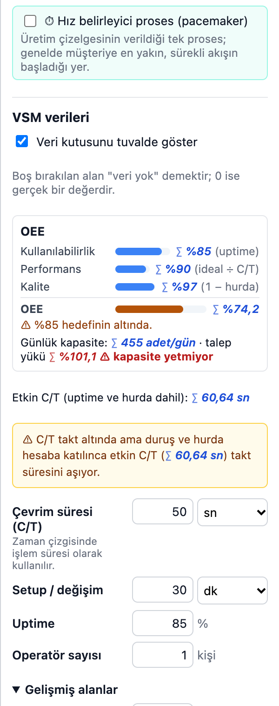
Girilen değerler prosesin altındaki veri kutusunda görünür; kutu prosesle birlikte taşınır. Kutuyu “Veri kutusunu tuvalde göster” ile gizleyebilirsiniz.
3.4 Stoklar
Prosesler arasında biriken her stok için bir stok üçgeni koyun. Stok miktarını adet ya da doğrudan gün olarak girin.
Bekleme (gün) = stok adedi ÷ günlük talep — örnekte Kesim sonrası 120 adet ÷ 460 = 0,26 gün.
Stoğa isterseniz birim değer de girin (ör. hammadde 10 TL, mamul 40 TL). Boş bırakırsanız ürün ailesinin birim maliyeti kullanılır. Böylece stoğun parasal değeri de hesaplanır.
3.5 Malzeme ve bilgi akışı
Okun türünü paletten seçip şekilleri bağlayın; var olan bir okun türünü okun panelinden değiştirin.
| Ok türü | Ne zaman? |
|---|---|
| Malzeme akışı (itme) | Bir proses, sonraki ne isterse istesin üretip ileri itiyorsa. |
| Çekme | Sonraki proses ihtiyacı kadarını süpermarketten çekiyorsa (gelecek durumda). |
| Sevkiyat | Tedarikçiden gelen ya da müşteriye giden taşıma. |
| Bilgi akışı | Elle / kâğıtla iletilen sipariş, plan, çizelge. |
| Elektronik bilgi akışı | Sistemle (ERP, e-posta) iletilen bilgi. |
| Genel ok | VSM dışı akış diyagramları için. |
Bilgi akışı için üstte bir Üretim kontrolü (planlama) kutusu koyun; müşteriden planlamaya, planlamadan tedarikçiye ve proseslere giden okları çizin. Okların etiketine sıklığı yazın (ör. “Haftalık sipariş”).
3.6 Zaman çizgisi
Harita verilerinde “Tuvalin altında zaman çizgisini göster” işaretli olsun.
Zaman çizgisi bir merdivendir: üst basamaklar stoklardaki bekleme günleri, alt basamaklar proseslerin çevrim süreleridir. Sıra, malzeme okları izlenerek kendiliğinden bulunur; geri dönüş okları (ör. yeniden işleme) sırayı bozmaz. Bilgi okları sıraya katılmaz.
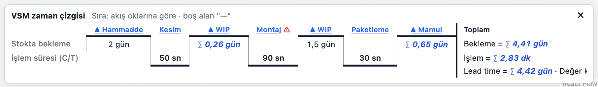
4. Haritayı okumak: göstergeler
Hiçbir şey seçili değilken sağ paneldeki VSM özeti tüm göstergeleri hesaplar. Aşağıdaki sayılar örnek sürecin mevcut durumuna aittir.
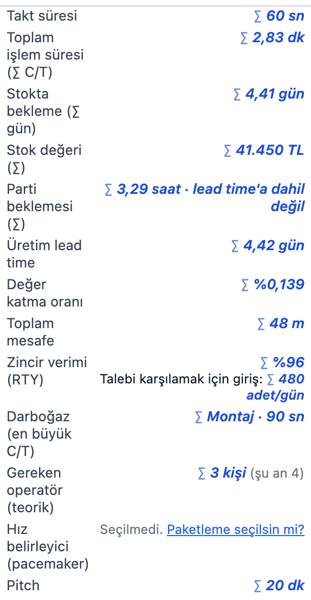
| Gösterge | Nasıl hesaplanır? | Örnek | Nasıl yorumlanır? |
|---|---|---|---|
| Takt süresi | Net süre ÷ talep | 60 sn | Hattın ritmi. Hiçbir prosesin C/T'si bunu aşmamalı. |
| Toplam işlem süresi | Σ C/T | 2,83 dk | Bir parçanın gerçekten işlendiği süre. |
| Stokta bekleme | Σ stok günleri | 4,41 gün | Ürünün sırada beklediği süre; genellikle lead time'ın neredeyse tamamı. |
| Üretim lead time | Bekleme + işlem süresi | 4,42 gün | Bir parçanın hatta girişten çıkışa kadar geçen süre. |
| Değer katma oranı | İşlem süresi ÷ lead time | %0,14 | Klasik VSM'de %1'in altı sık görülür; asıl hedef bekleme günlerini azaltmaktır. |
| Darboğaz | En büyük C/T | Montaj · 90 sn | Hattın çıktısını sınırlayan proses. |
| Gereken operatör (teorik) | ⌈Σ C/T ÷ takt⌉ | 3 kişi (şu an 4) | İş içeriği tam dengelenseydi gereken kişi. |
| Pitch | Takt × paket adedi | 20 dk | Bir paketlik işin süresi; iş verme aralığı. |
| Zincir verimi (RTY) | Π(1 − hurda) | %96 | İlk seferde sağlam çıkan oran. Talebi karşılamak için giriş: 460 ÷ 0,96 ≈ 480 adet/gün. |
| Stok değeri | Σ adet × birim değer | 41.450 TL | Hatta bağlı duran para. |
| Parti beklemesi | Σ (parti − 1) × C/T | 3,29 saat | Bir parçanın partinin geri kalanını beklemesi. Klasik yöntemde lead time'a eklenmez; isterseniz eklenebilir. |
4.1 Takt – çevrim süresi grafiği
Her proses bir çubuktur; dikey çizgi takt süresidir. Çizgiyi aşan proses takt üstüdür (kırmızı): talebi karşılayamaz. Örnekte Montaj 90 sn > 60 sn. Çubuğun taralı uzantısı etkin C/T'dir: duruşlar ve hurda hesaba katılınca bir sağlam parçanın gerçekte aldığı süre.
Etkin C/T = C/T ÷ kullanılabilirlik ÷ (1 − hurda) — Kesim: 50 ÷ 0,85 ÷ 0,97 ≈ 60,6 sn. C/T taktın altında olsa da etkin C/T taktı aştığı için Kesim turuncu uyarı alır.
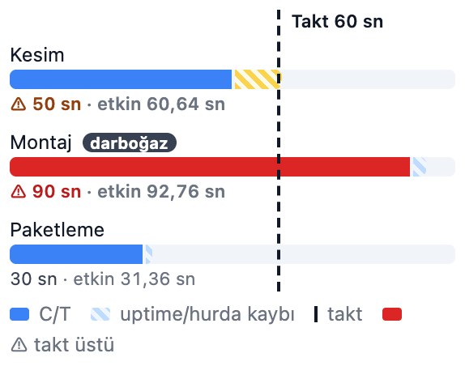
4.2 OEE
OEE (toplam ekipman etkinliği) üç kaybı birlikte gösterir:
OEE = Kullanılabilirlik × Performans × Kalite
- Kullanılabilirlik (A): uptime girildiyse o; değilse (net süre − plansız duruş − değişim sayısı × C/O) ÷ net süre.
- Performans (P): ideal C/T ÷ C/T (en fazla %100).
- Kalite (Q): 1 − hurda.
Örnek: Kesim %85 × %90 × %97 = %74,2 (%85 hedefinin altında). Paketlemede uptime girilmedi; 10 dk duruş ve 2 × 5 dk değişimden A = (460 − 20) ÷ 460 ≈ %95,7 hesaplanır, OEE ≈ %89,3.
Panelde ayrıca günlük kapasite (net süre × A × Q ÷ C/T) ve talep yükü görünür. Kesim'in kapasitesi ≈ 455 adet/gün, talep 460: yük %101 — kapasite yetmiyor.
4.3 EPEI (her parça her …)
EPEI, bir prosesin tüm çeşitleri bir kez üretme döngüsüdür. Uygulama, mevcut setup süresiyle en kısa olası EPEI'yi hesaplar:
EPEI = (çeşit sayısı × C/O) ÷ (kullanılabilir süre − üretim süresi)
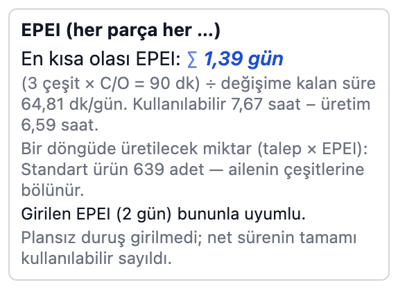
Kullanılabilir süre = net süre − plansız duruş; üretim süresi = talep × C/T ÷ (1 − hurda). Kesim: 3 çeşit × 30 dk = 90 dk değişim gerekiyor; günde ≈ 64,8 dk boş kalıyor → 1,39 gün. Girilen EPEI (2 gün) bununla uyumlu. Girilen değer hesaplanandan kısa olsaydı “bu sıklıkta değişime zaman yetmez” uyarısı çıkardı. Çözüm: setup süresini kısaltmak (SMED) ya da EPEI'yi uzatmak.
4.4 Operatör dengeleme (Yamazumi)
Takt grafiği her prosesi tek bir sayıyla (C/T) gösterir. Yamazumi (Japonca “üst üste yığmak”) bir adım daha ileri gider: her operatörün bir parça için yaptığı işleri tek tek üst üste koyar. Böylece kimin fazla, kimin az yüklü olduğu ve işin ne kadarının israf olduğu görünür.
İş adımlarını girmek: prosesi seçin, panelde İş adımları (operatör dengeleme) bölümünü açın ve + İş adımı ekle ile her işi yazın: adı, süresi (sn ya da dk), türü ve hangi operatörün yaptığı (Op 1, Op 2 …). ↑ ↓ düğmeleri sırayı değiştirir, ✕ siler. Üç tür vardır:
- Değer katan (katma değerli): müşterinin parasını ödediği iş — ör. yatağı takmak, vidaları sıkmak. Grafikte düz yeşil.
- Gerekli (katma değersiz): şimdilik kaçınılmaz ama değer katmayan iş — ör. parçayı kutudan almak, tork kontrolü. Çizgili turuncu.
- İsraf: tamamen kaldırılabilecek iş — ör. vida aramak, beklemek, gereksiz taşıma. Kareli kırmızı.
İş adımı girilmemiş proseste uygulama C/T ve operatör sayısını kullanır: her operatörün yükü C/T kabul edilir, türü bilinmediği için gri noktalı gösterilir. Operatör sayısı boşsa 1 kabul edilir; 0 yazılmışsa (otomatik makine) proses grafiğe girmez. Süresi boş bırakılan adım hesaba katılmaz (0 yazılan adım katılır).
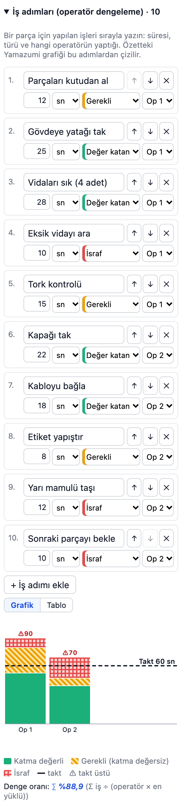
Özetteki grafik: VSM özetinde Operatör dengeleme (Yamazumi) bölümü tüm hattı gösterir. Operatör başına her operatörü, Proses başına her prosesin toplam işini bir sütun yapar. Yatay kesikli çizgi takttır; çizgiyi aşan sütun ⚠ ile işaretlenir. Birden çok operatörlü proseste mor çizgi “takt × operatör sayısı”dır: proses o kadar işi takt içinde bitirebilir. Tablo düğmesi aynı sayıları tablo olarak gösterir.
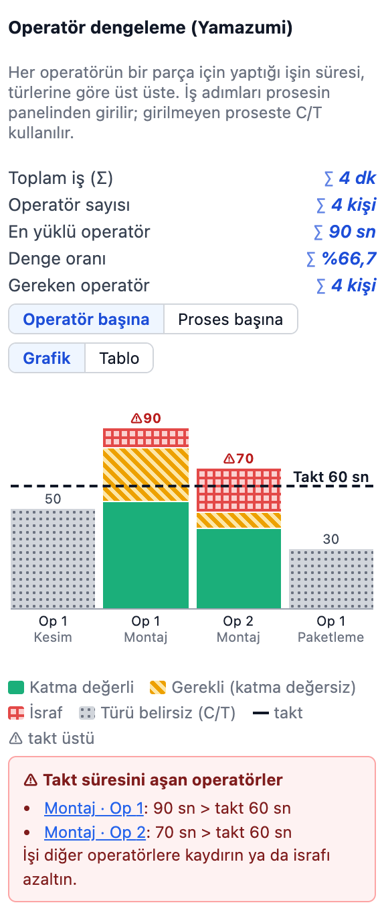
| Gösterge | Nasıl hesaplanır? | Örnek | Nasıl yorumlanır? |
|---|---|---|---|
| Toplam iş | Σ tüm operatörlerin yükü | 4 dk (240 sn) | Bir parça için hatta harcanan toplam insan işi. |
| En yüklü operatör | En büyük sütun | 90 sn (Montaj, Op 1) | Hattı yavaşlatan kişi; takttan büyükse talep karşılanamaz. |
| Denge oranı | Σ iş ÷ (operatör sayısı × en yüklü) | 240 ÷ (4 × 90) = %66,7 | %100 = herkes eşit yüklü. Düşük oran, bazı operatörlerin beklediğini gösterir. |
| Gereken operatör | ⌈Σ iş ÷ takt⌉ | ⌈240 ÷ 60⌉ = 4 kişi | İş tam dengelenseydi gereken kişi sayısı. |
Montaj'da 160 sn işin 32 sn'si israf, 35 sn'si gerekli iş. İsraf kaldırılır ve iş iki kişiye yeniden dağıtılırsa (gelecek durumda 55 + 54 sn) iki operatör de taktın altına iner ve Montaj'ın C/T'si 55 sn olur.
Not: Özetteki “Gereken operatör (teorik)” Σ C/T'yi kullanır (her proseste bir kişi varsayar, örnekte 3). Yamazumi ise girilen iş adımlarındaki gerçek iş içeriğini kullanır; Montaj'da iki kişinin işi toplam 160 sn olduğu için sonuç 4'tür. Karma modelde iş adımları tüm aileler için aynı kabul edilir ve görünümdeki ailenin taktı kullanılır.
Kısa yorum (örnek): Ürün hatta 4,42 gün kalıyor ama yalnızca 2,83 dakika işleniyor. Bekleme en çok hammaddede (2 gün) ve Montaj sonrası stokta (1,5 gün). Montaj takt üstü; Kesim duruş ve hurda yüzünden sınırda. İyileştirme önce Montaj'ın çevrim süresine ve stok seviyelerine odaklanmalı.
5. Gelecek durum haritası
Gelecek durum haritası, hedeflenen akışı gösterir (genellikle 3–12 ay içinde ulaşılabilir).
Üst çubukta “+ Gelecek durum”a basın: mevcut harita kopyalanır; ikisi ayrı ayrı düzenlenir. Sekmelerle geçiş yapın.
5.1 Gelecek durum için sekiz soru
Klasik yaklaşımda gelecek durum şu sorulara sırayla cevap verilerek tasarlanır. Her sorunun yanında uygulamada ne yapılacağı yazılıdır.
- Takt süresi nedir? Harita verilerindeki talep ve net süre. (Örnek: 60 sn.)
- Mamul, sevkiyattan önce süpermarkette mi tutulacak, doğrudan sevkiyata mı gidecek? Mamul stoğu için üçgen ya da süpermarket simgesi.
- Nerede sürekli akış (tek parça akışı) kurulabilir? Birleşen prosesleri tek kutu yapın; aradaki stokları kaldırın.
- Sürekli akışın mümkün olmadığı yerde süpermarket ve çekme nerede kullanılacak? Süpermarket simgesi + çekme oku; süpermarket boyutunu stok panelinden hesaplatın (5.2).
- Üretim çizelgesi tek bir noktaya, hız belirleyici prosese verilecek. Hangisi? Proses panelinde “⏱ Hız belirleyici proses”i işaretleyin (5.3).
- Hız belirleyicide ürün karışımı nasıl dengelenecek? Yükleme dengeleme (heijunka) simgesi; birden çok aile varsa aile tablosu.
- Hız belirleyiciye hangi iş paketiyle iş verilecek? Pitch (takt × paket adedi). (Örnek: 20 dk.)
- Bu akış için hangi iyileştirmeler gerekli? Kaizen patlamaları (bölüm 6).
5.2 Süpermarket boyutu ve kanban
Süpermarket simgesini seçin; stok panelinde yenileme süresi ve güvenlik payını girin.
Gereken stok = günlük talep × yenileme süresi × (1 + güvenlik payı)
Kanban kartı = ⌈gereken stok ÷ paket adedi⌉
Örnek gelecek durumda Kesim sonrası süpermarket: 460 × 0,5 gün × 1,10 = 253 adet → 253 ÷ 20 = 13 kart.
5.3 Hız belirleyici (pacemaker)
Hız belirleyici, üretim çizelgesinin verildiği tek prosestir; genellikle müşteriye en yakın, sürekli akışın başladığı yerdir. Seçilmediyse özet, akıştaki son prosesi önerir. Tuvalde ⏱ Hız belirleyici rozeti çıkar.
Kural: hız belirleyiciden sonraki akış sürekli ya da FIFO olmalıdır. Uygulama şunlarda uyarır:
- hız belirleyiciden sonra itme stoğu (üçgen) ya da süpermarket,
- hız belirleyiciden sonra itme oku,
- hız belirleyicinin takt üstü olması.
Son prosesten sonraki mamul stoğu uyarı almaz. Örnek gelecek durumda hız belirleyici Paketleme'dir ve uyarı yoktur.
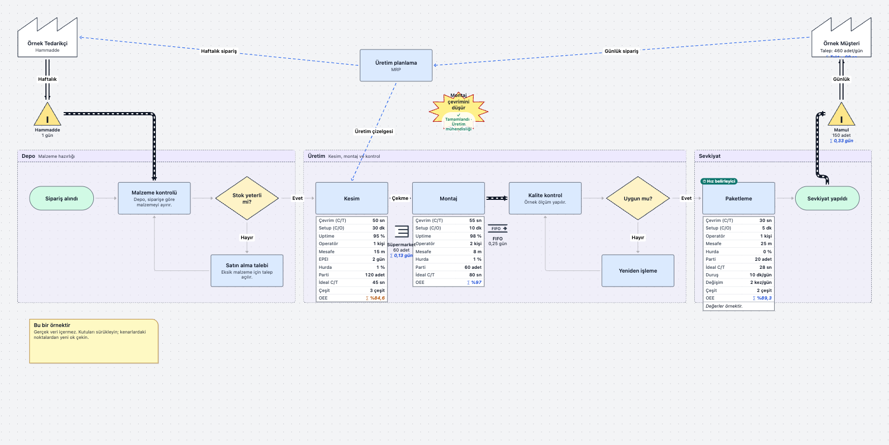
6. Kaizen planı ve karşılaştırma
6.1 Kaizen patlamaları
Paletten Kaizen patlaması ekleyin; panelde başlık, sorumlu, hedef tarih ve durum (açık / devam ediyor / tamamlandı) girin.
Özetteki Kaizen eylemleri listesi tüm patlamaları toplar; tarihi geçmiş ve tamamlanmamış olanlar ⚠ ile işaretlenir. Örnekte: “Montaj çevrimini düşür” — Üretim mühendisliği, 15.12.2026.
6.2 Mevcut ↔ gelecek karşılaştırması
Gelecek durum varken özetin altındaki tablo iki haritayı yan yana gösterir. Yeşil iyileşme, kırmızı kötüleşmedir.
| Gösterge | Mevcut | Gelecek |
|---|---|---|
| Üretim lead time | 4,42 gün | 1,71 gün |
| Stok değeri | 41.450 TL | 14.975 TL |
| İşlem süresi (Σ C/T) | 2,83 dk | 2,25 dk |
| Darboğaz C/T | 90 sn | 55 sn |
| Zincir verimi (RTY) | %96 | %98 |
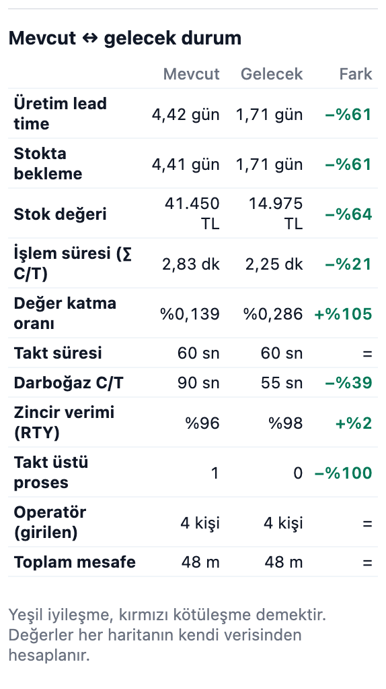
7. Birden fazla ürün ailesi (karma model)
Farklı ürünler aynı prosesleri paylaşıyorsa ayrı haritalar yerine tek haritada karma model kullanılabilir.
- Harita verilerinde “+ Ürün ailesi ekle” ile aileleri tanımlayın (en fazla 8): ad, talep, paket adedi, birim maliyet.
- Her proseste Ürün aileleri bölümünde o prosesten geçen aileleri işaretleyin; süre farklıysa aileye özel C/T girin (boşsa ortak C/T kullanılır).
- Stokları bir aileye bağlayın ya da “Tüm aileler (ortak stok)” bırakın.
Üst çubuktaki Aile seçicisi iki görünüm sunar:
- Tüm aileler (karma): karma takt = net süre ÷ toplam talep. Proses C/T'si talebe göre ağırlıklı ortalamadır. Proses yükü = Σ(aile talebi × aile C/T) ÷ net süre; %100'ü aşan proses kapasite yetmiyor uyarısı alır.
- Tek aile: o ailenin talebi, taktı ve C/T'leriyle klasik özet. O aileden geçmeyen prosesler ve başka ailenin stokları soluk görünür.
Örnek: Örneğe 100 adet/gün talepli ikinci bir aile eklenirse karma takt 27.600 ÷ 560 ≈ 49,3 sn olur. Montaj'ın yükü (560 × 90) ÷ 27.600 ≈ %183'e, duruş ve hurda payıyla ≈ %188'e çıkar.
8. Kaydetme, paylaşma ve dışa aktarma
| İşlem | Ne yapar? |
|---|---|
| Yerel taslak | Otomatik. Yalnızca bu tarayıcıda durur; bulut kaydı değildir. |
| Buluta kaydet | Misafir girişle buluta kaydeder (⌘/Ctrl + S). Projelerim'den açılır. Misafir hesabı bu tarayıcıya bağlıdır; çıkış yaparsanız projelere tekrar erişemeyebilirsiniz. |
| JSON dışa / içe aktar | Haritanın tam kopyası (mevcut ve gelecek durum birlikte). Yedek ve paylaşım için en güvenli yol. İçe aktarılan dosya önce doğrulanır, onayınızla açılır. |
| CSV (Excel) | Proses verilerini tabloya aktarır ya da tablodan günceller. |
| PNG indir | Tüm çizimin resmi. |
| Yazdır / PDF | Harita ve özet tablolarının yazdırma sayfası; yazdırma penceresinden PDF olarak kaydedilebilir. |
Aynı anda tek sekme kullanın. Uygulamayı iki sekmede açarsanız sekmeler birbirinin yerel kaydının üzerine yazar.
Hata ekranı: Beklenmeyen bir hata olursa çiziminiz silinmez. Ekrandan sayfayı yenileyebilir ya da son kaydı JSON olarak indirebilirsiniz.
Ekler
Ek A – Sembol sözlüğü
| Sembol | Anlamı |
|---|---|
| Müşteri / Tedarikçi | Dış taraflar (testere dişi çatılı fabrika). |
| Proses | Malzemenin kesintisiz aktığı alan; altında veri kutusu. |
| Stok / envanter (üçgen) | Biriken stok; zaman çizgisinde bekleme. |
| Süpermarket | Kontrollü, boyutu belli stok; çekme ile yenilenir. |
| FIFO şeridi | Sırası korunan, üst sınırı olan akış; ilk giren ilk çıkar. |
| Güvenlik stoğu | Talep ya da tedarik dalgalanmasına karşı tampon. |
| Üretim kanbanı | “Bu kadar üret” sinyali. |
| Çekme kanbanı | “Bu kadar al / taşı” sinyali. |
| Sinyal kanbanı | Parti üretimini tetikleyen sinyal (stok bir seviyeye inince). |
| Kanban posta kutusu | Kanban kartlarının toplandığı yer. |
| Yükleme dengeleme (OXOX) | Heijunka: ürün karışımını ve miktarı zamana yaymak. |
| Üretim kontrolü | Planlama birimi / sistem. |
| Git gör | Plan, sahaya gidip bakılarak güncelleniyor. |
| Operatör | Çalışan kişi. |
| Kamyon sevkiyatı | Dış taşıma. |
| Kaizen patlaması | Gereken iyileştirme. |
Ek B – Formül özeti
| Değer | Formül |
|---|---|
| Takt | net çalışma süresi ÷ günlük talep |
| Stok günü | stok adedi ÷ günlük talep |
| Lead time | Σ stok günü + Σ C/T (net süreyle güne çevrilir) [+ isteğe bağlı parti beklemesi] |
| Değer katma oranı | Σ C/T ÷ lead time |
| Gereken operatör | ⌈Σ C/T ÷ takt⌉ (karma görünümde ⌈Σ yük⌉) |
| Pitch | takt × paket adedi |
| Etkin C/T | C/T ÷ kullanılabilirlik ÷ (1 − hurda) |
| OEE | kullanılabilirlik × (ideal C/T ÷ C/T) × (1 − hurda) |
| Kullanılabilirlik (uptime yoksa) | (net süre − plansız duruş − değişim sayısı × C/O) ÷ net süre |
| Günlük kapasite | net süre × kullanılabilirlik × (1 − hurda) ÷ C/T |
| Proses yükü (karma) | Σ(aile talebi × aile C/T) ÷ net süre |
| Karma takt | net süre ÷ toplam talep |
| Parti beklemesi | (parti − 1) × C/T |
| En kısa EPEI | (çeşit × C/O) ÷ (net süre − plansız duruş − talep × C/T ÷ (1 − hurda)) |
| Süpermarket | talep × yenileme × (1 + güvenlik); kart = ⌈÷ paket adedi⌉ |
| Zincir verimi (RTY) | Π(1 − hurda); gereken giriş = talep ÷ RTY |
| Stok değeri | adet (ya da gün × talep) × birim değer |
| Operatör yükü (Yamazumi) | Σ operatöre atanmış iş adımlarının süresi (adım yoksa C/T) |
| Denge oranı | Σ iş ÷ (operatör sayısı × en yüklü operatör) |
| Gereken operatör (Yamazumi) | ⌈Σ iş ÷ takt⌉ |
Ek C – Saha veri formu
Her proses için bir satır doldurun. Ölçümü birkaç kez yapın; en kötü değeri “not” sütununa yazın.
| Proses | C/T | C/O | Uptime / duruş | Operatör | Hurda % | Parti | Çeşit | Sonraki stok (adet) | Not |
|---|---|---|---|---|---|---|---|---|---|
Hat verileri: günlük talep (aile başına) ____ · net çalışma süresi ____ dk/gün · vardiya ____ · sevkiyat sıklığı ____ · paket adedi ____ · birim maliyet ____
Bilgi akışı: sipariş nasıl ve ne sıklıkla geliyor? ____ · plan kime ve ne sıklıkla veriliyor? ____
Ek D – Sık yapılan hatalar
- Haritayı sahaya gitmeden, eski verilerle çizmek.
- Yalnızca malzeme akışını çizip bilgi akışını unutmak.
- Tek bir departmanı haritalayıp bütün akışı görmemek.
- Ortalama süreyle yetinip değişkenliği not etmemek.
- Boş alanı 0 sanmak: bilinmeyen değeri boş bırakın, 0 yazmayın.
- Haritayı amaç sanmak: harita, iyileştirmeyi planlamak için bir araçtır; kaizen planı olmadan eksiktir.
- Net çalışma süresine molaları ve planlı duruşları dahil etmek.
Ek E – Kısayollar
| Tuş | İşlem |
|---|---|
| ⌘/Ctrl + Z | Geri al |
| ⌘/Ctrl + Shift + Z ya da ⌘/Ctrl + Y | İleri al |
| ⌘/Ctrl + C / V | Seçili şekilleri kopyala / yapıştır |
| ⌘/Ctrl + D | Çoğalt |
| ⌘/Ctrl + S | Buluta kaydet (bulut projesi açıkken) |
| Delete / Backspace | Seçileni sil |
| Shift + sürükle | Alan seçerek birden çok öğe seçme |
Akış Editörü · VSM rehberi · Örnek veriler uydurmadır.